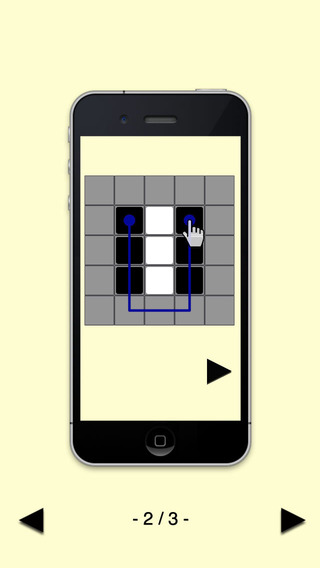
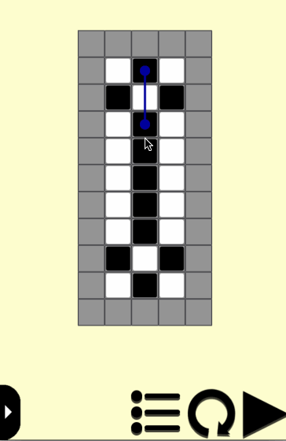
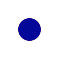

最早在GBA上玩过《通勤一笔》，是一款很棒的益智游戏。基本玩法为：
矩阵中有黑白两色方块，通过画线（只可横竖，不可斜向）可以将划过方块翻转，横行颜色相同即可消除，全部消除即可通关。为什么叫“通勤一笔”呢？因为只能画一笔。

实践过程如下：
格子
即方块的底盘，目前可有三种初始状态：
- 方块。画线后方块会被翻转，即黑白颠倒。
- 空。不包含任何方块，画线也不会对其产生影响。
- 锁。无法被画线。
还有一种附加状态就是被画线，线显示在最上层。
格子包含方块的引用，同时作为画线控制的接受对象，而方块只用来显示。
方块
只有黑白两种类型。主要负责显示。包含翻转和消除两种动画。
翻转
使用CCOrbitCamera来实现翻转效果，感谢Houzi的博文，翻转效果已经封装好了。指定正反面要用的sprite即可初始化CardSprite对象。
消除
即便是照搬了人家的玩法，体验上也还是要多加思考的。
尝试过几种效果后，最终决定使用scaleBy和fadeOut实现一个横向拉伸，纵向缩小，并逐渐淡出的效果。虽然原理简单，但是参数调整好后十分理想。很好地向玩家传达了横向消除的规则，而不会像原地淡出或爆炸等效果给人误导，这也是最终选择这种效果的原因。
翻转结束后，每个只有一种颜色的横行都会发生消除，为了增加消除的爽快度，按照从上至下的顺序一行行消除，每行之间各有延时，延时逐渐递减，且保证总动画时长一定，防止过去拖沓，影响体验。
当遇到无法消除的横行时，该横行会渐变为红色，传达给玩家信息：该行无法消除。

画线
控制方式分析
初点击一个无锁格子，该格子被画线。这是touchBegan触发画线。
之后滑到另一个无锁格子时，该格子被画线。这是touchMoved触发画线。
在已画线格子上，朝画线来的方向划回去可以抹除该格子的画线。这是touchMoved触发取消画线。
如果一直取消画线直到最初的格子，抬起手指，该格子也应该被取消画线。这是touchEnded触发取消画线。
如果点击了已画线格子的周围（上下左右）无锁格子，该格子被画线。
如果点击了最末尾的已画线格子，则取消该格子画线。
控制的实现
完成坐标转换，screenToLocal，并由localPosition定位到目前触摸点的格子。
在touchMoved中，通过deltaX和deltaY偏移可以定位当前格子curGrid，在下一次计算move偏移量前它就成了lastGrid，比较curGrid与lastGrid的异同可以捕获到画线划出一个方块并进入另一个方块的时机。
在该时机下，如果lastGrid已画线，curGrid未画线，则为画线操作，curGrid被画线；如果lastGrid和curGrid都已画线，则为取消画线操作，curGrid被取消画线。
touchBegan和touchEnded较为简单，只需判断当前被画线格子数量和该格子周围四个格子的状态，与上面的分析一致。
画线的连接
只需要四个状态即可，其他状态可以用这四个状态的水平或竖直翻转即可。
1. 2. 3. 4.
数据
配置文件
格式采用plist。关卡初始矩阵用二维数组描述，下标对应格子坐标，value对应格子状态。
答案使用一个数组描述，数组顺序即为连线顺序。
编辑器
每次配置关卡如果只能手填效率太低了，编辑器是必需的。开始考虑如何做编辑器时，发现很容易做出比开发核心玩法本身还复杂的工作，久思之后想出了一个偷懒的办法。在核心玩法模式上稍加改动，成为一个编辑模式。
- 增加两个输入框和一个重置按键。两个输入框分别输入矩阵的行数和列数，按下重置键，按行列数生成空白矩阵。
- 增加一个加锁按键（开关），按下后为锁的编辑状态，点击任意格子给格子加锁，再次点击解锁。再次按下加锁按键结束锁的编辑状态。
- 跟核心玩法一样的画线操作。画完的线即为该关卡的答案。
- 在每一行的末尾增加一个变换按键。该按键会按照该行无锁方块是否被画线来赋予不同颜色的方块，初始画线为黑色，未画线为白色，再次点击变换按钮则该行黑白颠倒。
- 增加一个关卡名的输入框和保存按键，按下后把当前矩阵和答案按关卡名保存至本地。
为什么会有变换按键呢？为了让一个既定答案可以产生不同的关卡，编辑时可以变变看，找到一个更有对称性或更有迷惑性的方案。
采取了逆向思维，从答案倒推关卡，省去了很多麻烦。但其实最优解的算法并没有完成，这个算法本身的难度远超过游戏本身，纠结于此会导致游戏都无法完成，后续作为一个有趣的课题再研究吧。
编辑器变成了编辑模式之后还有一个好处，就是可以用手机编辑关卡了，这样无论是在车上还是在马桶上都可以方便的编上一关，利用了碎片时间，想想还有点小佩服自己。
其他
引导
使用cocosBuilder制作了新手教学动画，还是有些技巧的，但因为cocosBuilder已慢慢被淘汰，遂不再赘述。
SDK
接入了友盟，ktplay，微信（英文版接入了Facebook），芒果广告。
WindowsPhone
使用代理来完成C++与C#交互，接入了支付和微软广告。
加密
配置文件一开始打算用xxhash加密，后来发现对于字符串用个简单的自定义字符映射，对于数值用个可逆公式就实现了混淆的目的。
采用了对比设备号的方式防备复制存档的行为，UserDefault同样有混淆，只会覆盖存档的小白玩家是无能为力的。
对于android包使用了360加固。
扩展
- 时间模式
- 步数和关卡数排行榜（ktplay）